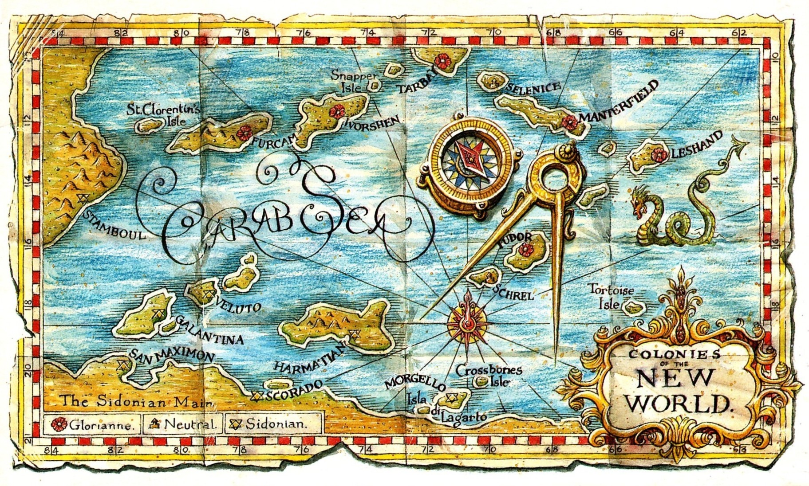
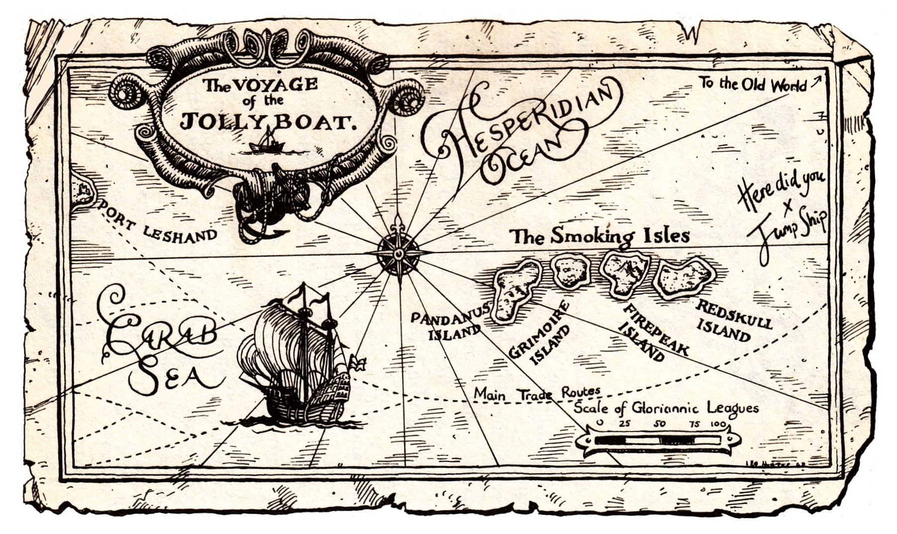

💰
10
❤️
10
⚓
0
Down Among The Dead Men
📋 Character
🗺️ Main Map
⛵ Jollyboat Map
🔄 Reset
🔊
×
Down Among The Dead Men
by Dave Morris
START NEW GAME
RESUME GAME
Loading...
×
Character Sheet
×
The Carab Sea

×
Jollyboat Journey

YOU HAVE DIED
Your adventure has come to an end...
Try Again